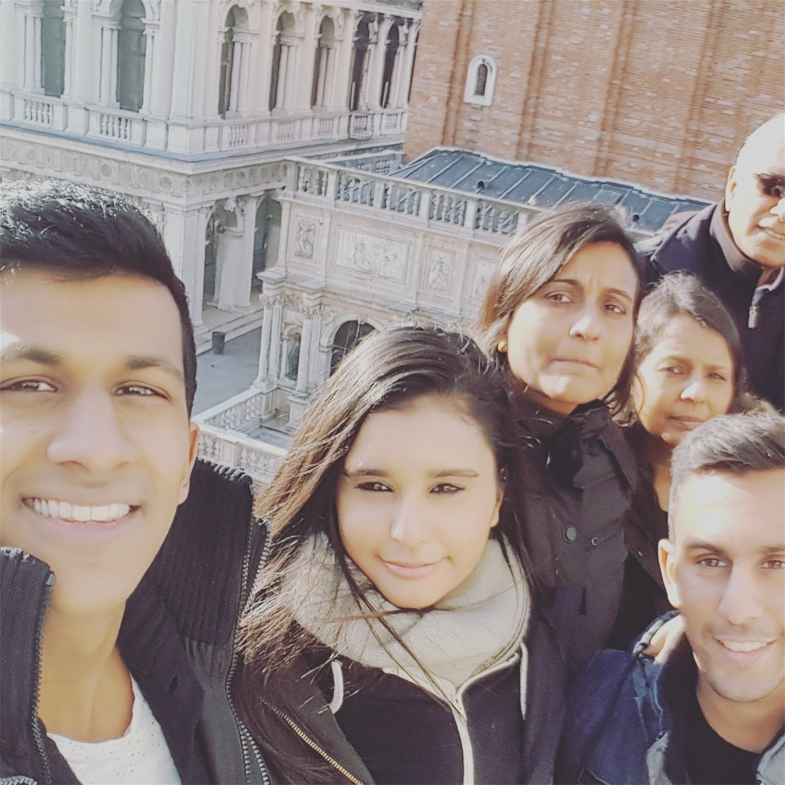

Hi! My name is Shivani. Thats a picture of me (I'm the one in the middle)! I am 23 years old. I live in London, England. I just recently graduated University of Derby where I recieved my BSc degree in Mathematics and Computer Science. My hobbies include Reading books (mostly non-fiction), Binge watching TV, attending concerts, Hiking, Camping, playing board games with my family and being a Harry Potter fanatic.

Joining FAC will provide me with the skills I require to become
a strong web developer. The intensive 4 month course will help
me learn popular coding practices, whilst encouraging me to
learn how to develop myself and my skills independently.
Working with a small cohort of people will allow me interact and
learn with other students as well as share my thoughts and
ideas. As a cohort we can build confidence, grow and develop our
knowledge together. FAC being a peer led program gives myself
something to look forward too as I also will teach future
cohorts. And, once the course ends, FAC’s engaged alumni network
and hiring partners open opportunities for me increase my
skillset and creativity.
Learning to code will make me achieve my goal in pursing my
dreams to become reality such as creating a platform for parents
to help their children find entertainment by immersing
themselves in the world of books rather than video games and
television.
Whilst completing the pre-requisites there we always a sense of
accomplishment as well as the excitement of what I will be
learning next or figuring out the solution to a problem. I found
that when I was actually understanding something then thats when
it became enjoyable to me.
I realised that FAC was the right fit for me when I joined the
4-week short course and Monday meetups. I found that despite the
short amount of time I was there I was really interested in what
I was being taught and introducing myself to future students was
taking my out of my comfort zone and improving my confidence was
a big obstacle I passed and I was excited to come the following
week.
All the reasons above is what I know I will get when I join
Founders and Coders - a sense of accomplishment, empowerment to
achieve what I want and excitement to learn new things,